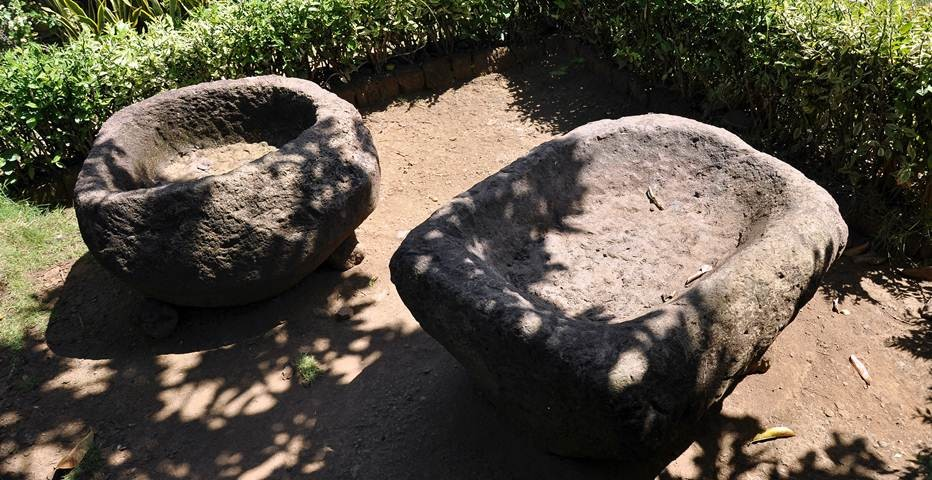

3 Hal di Jember yang Membuat Liburanmu Tidak Terlupakan

Situs Seputih : Salah satu tempat bersejarah di Jember
7 Pantai Tersembunyi di jember yang wajib diketahui
Situs ini diperkirakan muncul pada abad ke-10, bergantian dengan munculnya Candi Borobudur di abad ke-9. Namun banyak pula yang meyakini ini sudah ada sejak abad ke-4. Dan memang di sini merupakan salah satu perkampungan purbakala di jawa Timur. Di dalam Situs Duplang terdapat berbagai benda peninggalan zaman purbakala, antara lain menhir,watu kenong,dan Dolmen. Situs Duplang kerap disinggahi mereka yang ingin mengetahui sejarah peradaban masa silam nusantara. Situs Duplanag berlokasi di desa Kamal, yakni sebuah desa yang terletak di lereng Gunung Argopuro, Kecamatan Arjasa, Kabupaten Jember Provinsi jawa Timur. Lokasi ini berjarak sekitar 16 km dari alun-alun kota Jember. Pengunjung tidak akan diminta retribusi dalam bentuk apapun agar dapat memasuki kawasan Situs Duplang. Pengunjung hanya diminta untuk mengisi buku tamu oleh juru pelihara.Namun ada baiknya memberikan uang sebagai apresiasi dan juga sebagai ucapan rasa terimakasih kepada para penjaga Situs
Disarankan untuk anda
3 Hal di Jember yang Membuat Liburanmu Tidak Terlupakan
Situs Seputih : Salah satu tempat bersejarah di Jember
7 Pantai Tersembunyi di jember yang wajib diketahui